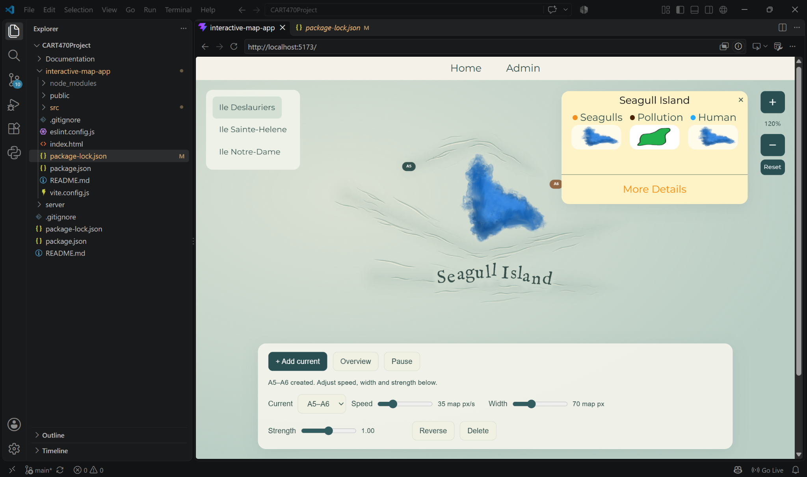

Documentary Encounters in the Hochelaga Archipelago
Exploring connections between islands, communities and the environments they share.
InteractionDocumentaryMapping
Week 07Connection editing & interface cleanup
Making connections easier to save and edit
Building on the group's line tool and bringing the three pages closer together before our presentation.
Working with what the group had already built
This week, I worked on the connection-line page. My teammate had already made a form that creates curved lines using start, control, and end coordinates, with repeated icons along the path. I wanted to build on that work without replacing the original way of adding lines. The first problem was that the lines disappeared after refreshing the page.
Jimmy suggested keeping the line information as JSON so it could later be used with the database. Since I had worked on JSON saving for the water currents last week, I used a similar approach here. I added Save JSON and Load JSON controls, then added automatic loading from the project's connection file. I also brought the Home, Admin, and Lines navigation into the Lines page so it would feel connected to the rest of the project.
01 / Testing JSON exportTesting several curves and exporting their settings. This version confirms the filename after saving.
Making the saving process clearer
While testing, I realized that the word “Save” was not very clear. The button downloads a file through the browser; it does not write directly into our project folder. I added a short reminder showing where the exported file needs to go: src/components/connections/data/connections.json. Replacing that file and pushing it to GitHub lets the group use the same starting lines. The water currents and connection lines remain separate JSON files because they describe different things.
This is still a file-based workflow, not a completed database connection. For now, it gives us a way to keep our work between sessions and share a configuration without entering every coordinate again.
Adding a more direct way to draw
Entering coordinates is useful when I know exactly where a line should go, but it is slow when I just want to try a shape. I added a Draw Line mode so I can start a connection by clicking two points in the drawing area. I kept the coordinate form for more precise changes. I also added selection, Update Selected, Delete Selected, and Undo controls, because I wanted to adjust or remove individual lines rather than rebuild the whole set.
One issue appeared during testing: the interface reported that three lines had loaded, but I could not see them in the drawing area. That showed me that a successful import message is not enough to confirm that the editor works. The saved data, the selected line, and the visible result all need to agree. Checking existing files as well as newly drawn lines is part of my next testing pass.
02 / Editing controls and a testing issueThe new controls are in place, but this screenshot also records the visibility problem I encountered after loading existing lines.
Pulling back on the visual redesign
I also worked on making Home, Admin, and Lines look more consistent for our upcoming presentation. The client liked the typeface in my Seagull Island title animation, so I wanted to preserve that part while making the menus and controls fit better together.
The first styling pass went too far. It added extra headings, descriptions, and decorative elements, and there was too much green across the editor. I felt it was starting to look like a generic designed template instead of our project. I revised the direction to keep the original wording, a beige page background, and a white drawing area with purple controls. For Admin, I kept different button colours so actions such as uploading, saving, and deleting are easier to distinguish.
03 / An intermediate styling attemptThis is the version I decided to simplify, not the final appearance. I removed the added copy and decorations and reduced the green in the drawing interface.
The useful changes this week were fairly practical: keeping lines after a session, being able to remove a mistake, and moving between pages. The styling work also reminded me to check whether a change actually helps the project. Consistent spacing and readable controls can do more than adding another title or paragraph.
Next steps
Before the presentation, I want to test the full sequence: open the default JSON, draw a line, edit it, delete it, undo, export, and load the exported file again. I also need to check the revised layout on another screen and confirm with the group how the connection data should eventually reach the database and the main map.
Try creating a connection
Click Draw line, choose two points, then use Curve to bend the line. Select a line to edit or delete it.
Open line demo
Week 06Components & shared water data
Making the water prototype easier to share
Moving from a visual experiment toward a part of the map that our group can reuse and maintain.
From the prototype to the group project
This week, I worked on two tasks Jimmy assigned to me: separating the water physics into components and finding a way to save and load water flows through JSON. Last week, I focused on how the island name could emerge from the water. This week was more about organizing that work so it could fit into our shared React project.
Separating the different responsibilities
The water prototype had become difficult to follow because the animation, controls, island information, and data handling were closely connected. I split the interface into reusable components for the island, its name and letters, and the water controls. I also separated the pathfinding, water simulation, and name animation into their own modules.
This gives each part a clearer role. For example, an island can receive its name, image, sound, and position through a data record instead of having those values written directly inside the animation code. Repeated elements, such as letters and current options, can be generated from data. The particles still run together in a shared Canvas simulation because the currents need to interact. I wanted to keep the visual behaviour while making it easier to change one part without searching through the whole script.
01 / Component refactoringThe completed task on our group board. The refactor prepares the water interface for repeated elements and future data integration.
Giving everyone the same starting currents
A problem with the earlier version was that water flows were saved in each browser's local storage. I could change the currents on my computer, but another group member would still see a different setup. That made it harder to discuss the same version of the map.
I added Save JSON and Load JSON controls. Each current is represented by its ID, start and end points, speed, width, and strength. The map rebuilds the route around the islands when it loads those values. Keeping the editable settings separate from the temporary animation state makes the file easier to share.
I then changed the default loading behaviour so that everyone starts from the project's currents.json, rather than their own browser cache. To update the shared defaults, I export the currents, replace the JSON file in the project, and push that change to the repository. Other members can pull the same file. This still involves a manual file replacement; the Save JSON button downloads the file rather than automatically writing into the project folder.
02 / Shared water configurationThe JSON task is marked complete. The project file now provides the shared starting configuration.
A smaller interface change
I also replaced the zoom buttons with a slider and a percentage display. It lets the viewer adjust the scale continuously instead of clicking several times. The reset control returns the map to 100%. I kept the keyboard sequence for hiding the water editor so the controls can be removed from view when presenting the map.
04 / Zoom and island selectionAt 172% zoom, the island name and preview appear together. The editor also confirms that the current configuration has been downloaded as JSON.
The main lesson this week was the difference between saving a personal experiment and saving something for a team. Local storage was convenient while testing, but a shared project file makes our decisions easier to compare. The currents now use the same settings, although the small watercolour particles can still look slightly different because their animation includes randomness.
Next steps
My next step is to check the updated version with the group on another computer and make sure everyone is using the same branch and JSON file. I also want to test the component structure with more islands and see whether the labels and currents remain clear as the map becomes more populated. The data interfaces are prepared for further integration, but connecting them to a shared backend is still separate work.
Week 05Island names & integration testing
Making island names appear as part of the water
Testing how an island name can emerge, move, and disappear without feeling like a separate interface label.
Testing the island name as part of the map
This week, I continued working with the water prototype, but instead of adding another large feature, I focused on how the name of an island could appear after it is selected. I wanted the label to feel connected to the visual language I had already been developing rather than simply placing a fixed title on top of the map.
I used Seagull Island as a temporary test case. My first experiments made the text rise vertically, but that did not make sense for a flat map viewed from above. I changed the idea so that the letters appear from the surface of the water instead. The water visually pulls away from the text as it becomes visible, making the name feel as if it is being revealed by the map itself.
I also tested giving the letters slightly different positions and rotations instead of keeping them on one perfectly straight line. This makes the name feel less like a standard interface heading and more like something floating on the water. The movement is intentionally subtle because the name still needs to be readable. When another island is selected, the previous name gradually fades and sinks back into the water before the next one appears.
01–02 / Week 5 development comparisonOn the left is the current shared project interface, and on the right is my island-name prototype. Showing them together helps explain the next step of adapting my test into the group repository.
Connecting the text with the water system
One issue I started thinking about is the relationship between the name and the animated currents. If the water continues moving directly through the letters, the result can become visually confusing. I therefore began treating the name almost like a small temporary island: the surrounding water should react to it or at least leave enough visual space around it. This is still an approximation, but it helps the text feel integrated with the same system rather than layered independently on top.
This experiment also made me reconsider how much animation is necessary. The effect becomes more interesting when the name appears slowly and the water responds around it, but too much movement can distract from the documentary content. For the final interface, the animation should support orientation first and only then contribute to the atmosphere of the map.
Moving from my prototype into the group project
The next step is to bring this experiment into our shared project repository. My current prototype is useful because I can change the water, text, and island-selection behaviour quickly, but the group project already has its own structure and components. I need to separate the parts that are reusable from the parts that only belong to my test environment, then adapt them so they can work with the group's island data and navigation.
I also want to avoid integrating the effect as one large block of code. Ideally, the island-name animation should become a small reusable component that can receive an island name and position from the shared map. This would make it easier for the group to apply the same behaviour to different islands and later replace temporary names with real documentary content.
Once it is integrated, I want to test three things: whether the name remains readable over the moving water, whether switching between islands feels natural, and whether the effect still performs well inside the larger map. I also need to consider a reduced-motion version so the interface does not depend on animation to communicate which island is selected.

03 / Week 5 integration testTesting the water effect and island-name animation inside the group project interface.
Week 04Water animation & material experiments
Making water move & finding a material language
Testing how currents can connect the islands without overwhelming the map.
Last week, I explored how a 2D map could reveal relationships between islands through different perspectives. This week, I focused on one part of that idea: the water between the islands. I wanted to test whether movement could make that space feel connected, while developing a visual style suited to our fine arts project and its intended museum audience.
I worked on an HTML, CSS, and JavaScript prototype with simplified outlines based on real island geography. I used Island A and Island B as temporary names and added a camera transition when selecting an island. Most of my work went into the water: creating currents, adjusting their behaviour, and repeatedly revising their appearance.
The prototype lets me click two points to define a current, then change its speed, width, and strength independently. Paths are calculated around the islands, and currents can be reversed or deleted. I also revised the endpoint labels to follow A1–A2, A3–A4, and so on, rather than leaving an increasingly confusing list of current numbers. These controls make it easier to compare variations during development.
Working prototype / Interactive evidence
Explore the current water study
Select Open preview to test it here. In the prototype, choose + Add current, then click two points in the water. Adjust Speed, Width, and Strength; add another current to examine the overlap. Click an island to focus on it, or use Overview to return.
Development study, not a finished visitor interface. Use Pause inside the prototype to stop the animation, or close this preview to stop it running. If the embedded page does not load, use the new-tab link. This live page may change as development continues.
What changed through iteration
I initially aimed for an ink-inspired appearance, but the early results exposed a difference between a texture that looks interesting and one that communicates flowing water. Thin repeated lines became visually busy, while larger ink patches looked like separate blobs. Increasing softness made the image less clear without resolving the movement. I gradually moved toward longer, curved marks that follow the flow and change shape as they travel.
An unexpected result became the most useful visual discovery. The light and dark edges of the marks looked embossed, almost like paper wrinkling after becoming wet. At first, this seemed to be a departure from the ink effect, but I decided to keep it. I strengthened the damp areas and the shadows around the folds, while retaining pale highlights. This gave me a more specific direction to explore: water expressed through the changing surface of paper.
The folds alone did not always make the whole current easy to read, so I brought back a subtle darker layer with slowly changing wave edges. I kept this layer restrained and limited how much overlapping areas could darken. I also made the end of a current gradually slow down, narrow, and fade, because a sudden cutoff made the animation feel artificial. These changes helped connect the small surface details to the larger direction of movement.
What the prototype does—and what remains unresolved
The current version gives me a way to explore direction, rhythm, and a wet-paper texture together. However, adding more currents raises a different problem: an effect that works around one island may become distracting across a larger map. I introduced shared density limits and showed endpoint labels only for the selected current. I want the water to support the islands and their stories, so visual intensity cannot simply increase with the number of currents.
The currents use a shared flow field to approximate interaction and bend around land. This is an artistic approximation, not a validated simulation of the archipelago’s actual water movement. That distinction matters in a documentary project: visitors could interpret an animated route as factual information. Before using currents to communicate environmental relationships, we need to establish with the client what the animation represents and what evidence would support it.
I also need to separate the editing tool from the visitor experience. Clicking two points and adjusting sliders is useful for my experiments, but it does not yet explain why a museum visitor should interact with the water. The prototype currently tests visual behaviour; it does not yet connect a current to documentary content or demonstrate that visitors understand its meaning. I have not yet gathered visitor feedback on this version.
Next tests
My next step is to bring this version to the group and client discussion, then compare a sparse map with a version containing several currents. I want to ask whether people can identify the direction of movement, whether the wet-paper texture suggests water to them, and whether they still notice the islands first. I would also test the map with a story panel open to see whether the animation competes with reading.
Before expanding the visual treatment, I need to check performance in the intended display context and consider a reduced-motion or static view. The most important question now is whether this material style helps people explore connections. This week gave me a working visual direction and a more flexible testing tool, but its value for the final experience still needs to be tested with content and an audience.
Week 03Client meeting & concept development
First client meeting & mapping connections
Thinking about what visitors will discover and how they will explore.
This week, our group met with the client for the first time to discuss Documentary Encounters in the Archipelago. Our project is an interactive map of the Hochelaga Archipelago. The meeting helped me understand what we need to consider beyond the map’s appearance: who will use it, what they might discover, and how the client could continue adding content after our work is finished.
One question from the meeting stayed with me: what do we want visitors to take away from the experience? Someone unfamiliar with Montreal might need an introduction to the archipelago, while someone who already knows the area might be interested in unexpected stories or connections. We also discussed how some museum visitors may not immediately want to interact with a map. This made me think about the entrance to the experience. Before designing detailed controls, we need to give people a reason to explore and make their first interaction easy to understand.
During our brainstorming, we explored travelling through the map by boat or from the perspective of a bird, fish, or turtle. I found this idea interesting because the way someone moves could influence the connections they discover. A boat might follow accessible waterways, while an animal’s movement could draw attention to habitats or migration. Our paper sketches explored navigation, information panels, filters, and different ways of showing relationships between islands. I began to see how the interaction itself could help communicate the project’s content.
01–03 / Week 3 discussion Navigation sketches, possible interactions and questions about audience and scope. Click an image to view the original.
Environmental issues also came up during the meeting, including pollution and birds eating trash. These examples made me think about connections that are difficult to see on a conventional map. Water, animals, and human activity move between islands, so an island’s story extends beyond its geographical boundary. Filters or different perspectives could help visitors discover these relationships. However, we still need to decide which ideas are meaningful and realistic to develop. We discussed mini-games and hidden discoveries, but their purpose would need to connect clearly to the stories being presented.
Another consideration is how the project will be maintained. The client would ideally be able to add or change content independently, which means we need to plan for that from the beginning. We also discussed French, English, and the possibility of including an Indigenous language through collaboration. These conversations reminded me that our design decisions depend on further communication with the client and the people contributing to the project.
Design exploration / Proposed direction
One map. Different ways of seeing.
At this stage, I am leaning toward a mainly 2D map that visitors can explore by dragging, zooming, and clicking on islands. Building on our discussion of filters, I would like to explore perspectives as a way of changing what the map reveals. A human perspective could highlight access points, bridges, and visitor stories, while a bird perspective could reveal habitats and movement between islands. The geography would stay the same, but the relationships brought into focus would change.
I also like the idea of letting visitors gradually build a map of connections through the stories they open. For example, after reading about access to one island, they could switch to a bird perspective and discover its relationship with another habitat. Opening that related story could reveal a connecting line with a short explanation. This would give the filters a role in storytelling and encourage visitors to explore further.
Concept sketch / Same islands, different connectionsIllustrative islands and routes only. Actual stories, access details and wildlife connections would need to come from the client’s material. Switching here demonstrates filters; story discovery is a proposed next step.
01 / EnterExplore the 2D map
Choose a language, then browse the islands.
02 / DiscoverOpen an island story
Read, look or listen to a documentary excerpt.
03 / ReconsiderSwitch perspective
Use a filter to reveal another set of relationships.
04 / ConnectFollow a related story
Open another island and see why the two are connected. Continue exploring from there.
For an initial test, I would keep this to three islands and two perspectives: human and bird. I want to find out whether visitors understand what changes when they switch filters, and whether the connections encourage them to open another story. This is a direction I would like to discuss with the group and client before treating it as a final design.
As a group, we outlined milestones that move from a static map to navigation, additional information, and final polish. Our next step is to review our Figma prototypes and combine them into a shared direction before the October 7 client meeting. For me, the main challenge now is narrowing our many ideas into an experience that is understandable, engaging, and manageable for our team to build.
Week 02Research & ideation
Understanding the project & initial brainstorming
From a map of places to a map of relationships.
This week, our group discussed the project brief for Documentary Encounters in the Hochelaga Archipelago. At the beginning, I understood the project mainly as an interactive map that would help viewers locate the islands mentioned in the documentary. However, our group discussion helped me realize that the project is not simply about geographic navigation. Its larger goal is to communicate the relationships between islands, people, animals, water, infrastructure, history, and environmental issues.
We identified “connection” and “inter-relation” as the most important keywords. The islands should not appear as isolated locations. Instead, the interface should reveal how different elements move between them and affect one another. Our brainstorming included the history of each island, local fauna and flora, pollution and social issues, natural landscapes, and infrastructure. We also considered how documentary clips, descriptions, sound, and animation could be connected to specific places on the map.
01–02 / In-class discussion Initial sketches, possible features and questions. Click either image to view the original.
One idea that interested us was creating a “moving map.” Different animated layers could represent birds, fish, boats, rivers, or water currents travelling through the archipelago. Users could click on an island or moving element to access a documentary clip, image, sound, or short piece of information. Features such as filters, zooming, hovering, and a timeline could help users explore without showing all the information at once. I think this approach could make the map feel alive and communicate connections that are usually invisible on a traditional map.
The discussion also revealed several questions that we have not answered yet. We need to define the target audience more clearly and decide whether the experience should focus more on education, artistic interpretation, or a balance of both. We also discussed whether the map should be two-dimensional or three-dimensional, which languages it should support, and how it could remain accessible online. Another important question is scalability. The Hochelaga Archipelago contains more than 230 islands, so trying to represent everything would make the prototype confusing and unrealistic within the available time.
Our current direction is therefore promising but still broad. I think our next step should be to reduce the scope and identify the most important user journey. For example, the prototype could focus on three to five islands and use one connecting element, such as water, to guide users between documentary stories. We should also learn what media and information the documentary team can provide before deciding on specific features.
The most valuable outcome of this session was moving from a general idea of “a map with videos” toward an interactive documentary experience based on relationships and movement. We now have several possible features, but our next challenge will be deciding which ones best support the project’s central message rather than adding interaction only for visual effect.